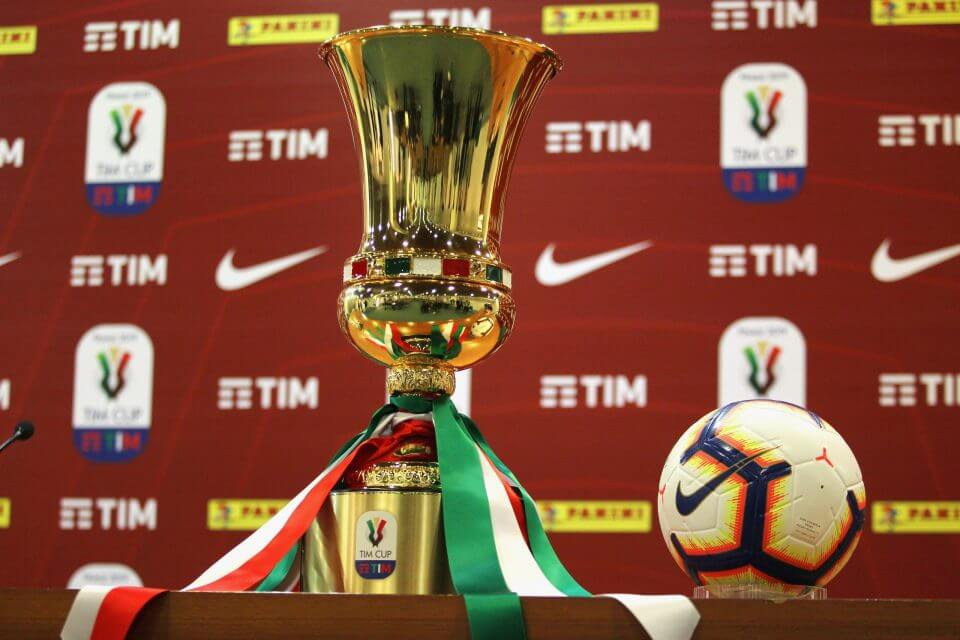
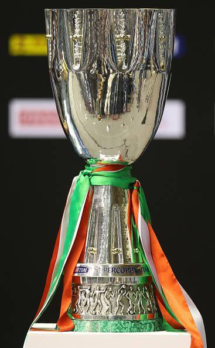

Logros 🏆
Serie A
El Inter ganó su primer campeonato en 1910. Desde su formación, el club ha ganado 19 titulos de liga, de 2006 a 2010, ganó cinco títulos de liga consecutivos, igualando el récord histórico en ese momento. Los años en los cuales el inter levanto el trofeo de campeón de la Serie A fueron 1909–10, 1919–20, 1929–30, 1937–38, 1939–40, 1952–53, 1953–54, 1962–63, 1964–65, 1965–66, 1970–71, 1979–80, 1988–89, 2005–06, 2006–07, 2007–08, 2008–09, 2009–10 y 2020–21.

Coppa Italia
Su primera Coppa Italia se ganó en 1938-1939, dirigida por el icónico Giuseppe Meazza, cuyo nombre oficial es el estadio de San Siro. Siguió un quinto campeonato en 1940, a pesar de que Meazza sufrió una lesión. Después del final de la Segunda Guerra Mundial, el club recuperó su nombre original, ganando su sexto campeonato en 1953 y el séptimo en 1954.
En Coppa, el cuadro de Milán tiene en sus vitrinas ocho coronas, la última databa de la temporada 2010/2011. El detalle: 1938/1939, 1977/1978, 1981/1982, 2004/2005, 2005/2006, 2009/2010, 2010/2011 y 2021/2022.
Supercoppa italia
La primera vez que alzó este trofeo fue en el curso 1989/90, mientras que la última se había registrado hace diez años antes de vencer a la Juventus en San Siro: 1989/1990, 2005/2006, 2006/2007, 2008/2009, 2010/2011, 2021/2022.
UEFA Champions League
Inter se consagró campeón de la Champions League en 3 ocasiones: 1963/1964, 1964/1965, 2009/2010.
El Inter al ganar su última Champions 2009-10 , derrotando al Barcelona en la semifinal antes de vencer al Bayern Munich 2-0 en la final con dos goles de Diego Milito. El Inter también ganó el título de la Serie A 2009-10 por dos puntos sobre la Roma, y la Coppa Italia 2010 al derrotar al mismo equipo 1-0 en la final. Esto convirtió al Inter en el primer equipo italiano en ganar el triplete. Al final de la temporada, Mourinho dejó el club para dirigir al Real Madrid; fue reemplazado por Rafael Benítez.

Europa League
Inter se consagró campeón de la Europa League en 3 ocasiones (1990/91, 1993/94, 1997/98), durante la anterior denominación del certamen, “Copa UEFA”. En 2020 estuvo a un paso de alcanzar la gloria tras caer en la final ante el Sevilla después de vencer 5-0 en la semifinal al Shakhtar Donetsk.
Los nerazzurri jugaron la quinta final de su historia en esta competición, la primera desde que pasó a llamarse Europa League. Las anteriores:
- Final Copa de la UEFA 1990/1991 | Inter 2-0 Roma [Matthäus, Berti] - Roma 1-0 Inter [Rizzitelli]
- Final Copa de la UEFA 1993/1994 | Salzburgo 0-1 Inter [Berti] - Inter 1-0 Salzburgo [Jonk]
- Final Copa de la UEFA 1996/1997 | Schalke 04 1-0 Inter [Wilmots] - Inter 2-4 (pen) Schalke 04 [1-0, Zamorano]
- Final Copa de la UEFA 1997/1998 | Lazio 0-3 Inter [Zamorano, Zanetti, Ronaldo]

Copa intercontinental
El Inter registra dos copas Intercontinentales en su palmarés. Ambas conseguidas en los años 60 y de manera consecutiva: 1964/65 y 1965/66.

Mundial de clubes
Luego de conquistar la Champions League, el Inter sumó a sus títulos logrados la Copa Mundial de Clubes de la FIFA, en 2010, tras ganar en la final al TP Mazembe Englebert de la República Democrática del Congo en Abu Dhabi. El equipo nerazzurri, que también logró el Scudetto, la Coppa de Italia y la Supercoppa de Italia ese año, superó a su rival por 3-0. Pandev, Eto'o y Biabiany marcaron los tantos del triunfo.

Resumen
El Inter ha ganado 33 trofeos nacionales, incluida la Serie A 19 veces, la Coppa Italia ocho veces y la Supercoppa Italiana seis veces. De 2006 a 2010, el club ganó cinco títulos de liga consecutivos, igualando el récord histórico antes de 2017, cuando la Juventus ganó el sexto título de liga consecutivo. Han ganado la UEFA Champions League tres veces: dos consecutivas en 1964 y 1965 y luego otra en 2010; el último completó un inédito triplete italiano con la Coppa Italia y el Scudetto. El club también ha ganado tres UEFA Europa League, dos Copas Intercontinentales y una Copa Mundial de Clubes de la FIFA.
El Inter nunca ha sido relegado de la máxima categoría del fútbol italiano en toda su existencia. Es el único club que ha competido en la Serie A y sus predecesores en todas las temporadas desde su debut en 1909.